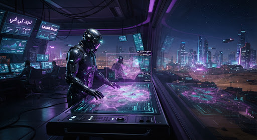
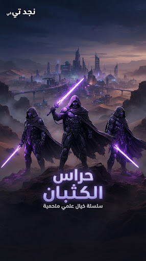
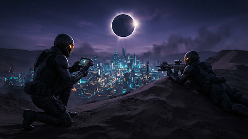
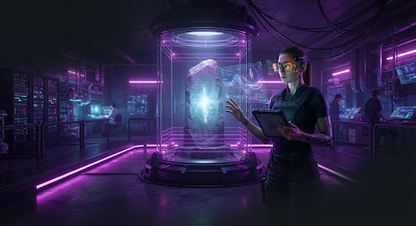
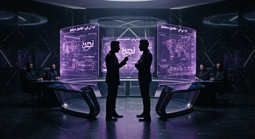
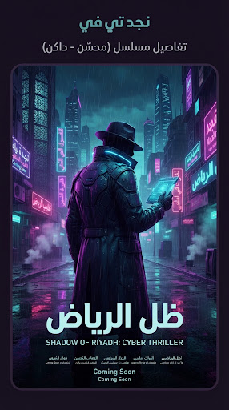
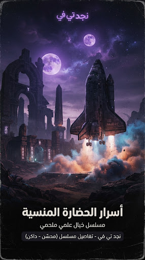
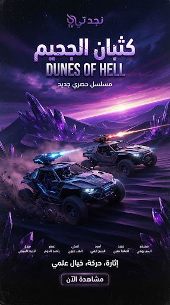
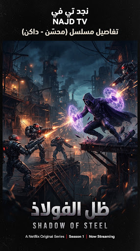

play_arrow
1. بزوغ الحصن الأخير
يواجه القائد عمار اختراقاً غير مسبوق في منظومة حماية حقول الطاقة الشمسية شمال الوادي، ويكتشف شفرة نداء سرية تنتمي لفرقة ظُن أنها أُبيدت.

في عاصمة نجد المستقبلية المحاطة بدروع الطاقة الكهرومغناطيسية، تنشأ فرقة نخبة غامضة تُعرف باسم «فرسان الظلال» لحماية أسرار مصادر الطاقة المتجددة من أطماع نقابات المرتزقة العالمية. يجد القائد عمار نفسه في مواجهة صراعات أخلاقية وكشوفات تهدد تماسك المدينة وسكانها، حينما يتغلغل عدو قديم داخل مجلس القيادة العليا.
العربية (الأصلية - Najdi Studio Master 5.1)، الإنجليزية (مدبلج)
العربية (CC)، الإنجليزية، الفرنسية، الإسبانية

يواجه القائد عمار اختراقاً غير مسبوق في منظومة حماية حقول الطاقة الشمسية شمال الوادي، ويكتشف شفرة نداء سرية تنتمي لفرقة ظُن أنها أُبيدت.

تقود المحققة لينا فريق استطلاع نحو مخابئ صحراء النفود لتعقب مصدر التشويش الإلكتروني، وسط عواصف رملية كهرومغناطيسية تعزلهم عن القيادة.

اشتباك جوي صامت بين سرب درونات الفرسان ومقاتلين مجهولين على ارتفاع كيلومترين فوق ناطحات السحاب المركزية.

تسريب وثائق التشفير الأساسية من داخل المجلس يضع عمار في موقف حرج، ويدفعه للعمل منفرداً خارج البروتوكول القانوني.



